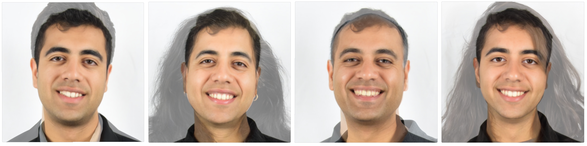

Throughout this project we will we use Delaunay triangulations and affine warping to smoothly and quickly morph
facial structures into each other.
Part 1. Defining Correspondences
To perform the required warping, we first need to define correspondences between any two images we would like
to warp. For a smooth warp on a reasonably sized image, 30-45 corresponding points are necessary. We define
a "reasonably sized image" as being on the order of hundreds of pixels in either dimension. Before defining
correspondences, I ensured that the images were the exact same pixel dimensions, along with having their
subjects reasonably well aligned. The following tool from a previous student was used to
generate json files containing correspondence data.
I used images of my family for this project, and as such their correspondences and Delaunay triangulations
are depicted below. Each of the images below is 580px x 580px x 3 channels.
Me
Me, Circa 2017
Sister
Father
Mother
Part 2. Computing the "Mid-way Face"
Here we begin our warping endeavours by finding the "midpoint" of two images. Note that we define the
midpoint of images through the following procedure.
Finding the "average" shape by averaging across correspondences.
Morphing both the first and second images into these averaged keypoints.
Cross-dissolving (interpolating) color between the two images.
Below are the midpoints of each of my family members (and a younger version of myself) with myself.
Morph Source Image 1

Midpoint of Morph Images (above and below)
Morph Source Image 2
Part 3. The Morph Sequence
We write a morphing function that takes in two images, their respective correspondences, and a specific
delauney triangulation and produces a gif of their simultaneous morph. Notice that my implementation of
computeAffine(tri1_pts,tri2_pts) is fully vectorized and computes the
affine transformations for all triangles simultaneously, allowing for a runtime of ~1 sec/frame.
Both the cross-dissolve and warping parameters were varied linearly on [0, 1] and the generated
gif is 60 frames at 30 fps. Note that these affine transformations were calculated using
homogenous coordinates across various triangular masks. These masks were generated using
skimage.draw.polygon.
Below is the morphing animation from me to my mom. Note that I used a median smoothing filter to get rid of
any artifacts resulting from the polygon borders and cropping 20px off each edge for smoothness of
transitions, as our clothing pieces were different.